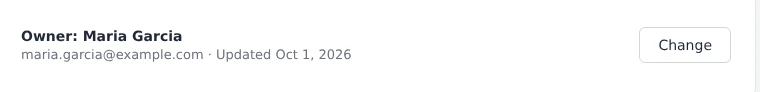
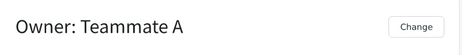

Add boxes, numbers and notes to the screenshots in your guides. Harie saves a regular
JPEG or PNG that you can paste anywhere. Open it in Harie later, and every box and
caption is still editable.
Harie covers everything from the first capture to the saved file.
1
Capture
With the Chrome extension, you can capture the page you're on and open it straight in the editor. Choose the visible area, a region you drag, or a single element like a button.
2
Annotate
Explain things with boxes, arrows, numbers, callouts and spotlights. Tell Harie what you want to explain, and AI drafts numbered boxes and captions for you.
3
Keep
Harie saves a regular JPEG or PNG. You can paste it into your help center as is, and anyone who opens it later can still edit the annotations.
How it stays editable
One image holds the original screen and the annotations.
An image saved by Harie carries the original screenshot and the annotation data alongside the picture you see. Other apps and browsers simply show a normal image.
Open it in Harie and you can move or rewrite each box and caption. You don't need to keep a separate project file, and whoever receives the image can open it and fix it.
Saving again never recompresses the original screenshot, so quality holds up however many times you edit. The
file format spec
is public (in Japanese).
Write something like "Explain how to set up Slack notifications," and AI drafts where the boxes go and what they say. You can accept, reject or edit each suggestion. On screenshots from the Chrome extension, the boxes line up with the actual elements on the page.
You'll need your own Anthropic API key. Harie always asks before sending an image, and your key never leaves this browser.
Edit from Claude (MCP)
Once you register the @harie/mcp server, you can ask Claude Code or Claude Desktop to add or fix annotations for you. When UI text changes, you can update every affected image in one go.
In the notifications image under guides, change "Save to apply" to "Update to apply"
harie_open → harie_edit
Updated callout 3 and saved the file.
Personal data
Remove personal data, keep the meaning.
Replace names, email addresses and phone numbers with dummy values. Unlike a blur, this lets readers still tell what kind of screen they're looking at. Fill, mosaic and blur are there too if you prefer.
Masking is applied to the original image itself, so it can't be undone. That also means the original values don't travel with the file when you share it.
Before

After

The sample screen, names and addresses are all fictional.
Works where you work.
Wherever you save it, you get the same file and the same look.
Web
Use it right in your browser, with nothing to install. Images are processed in the browser and never sent to a server, and it works offline too. You can switch the interface between English and Japanese in Settings.